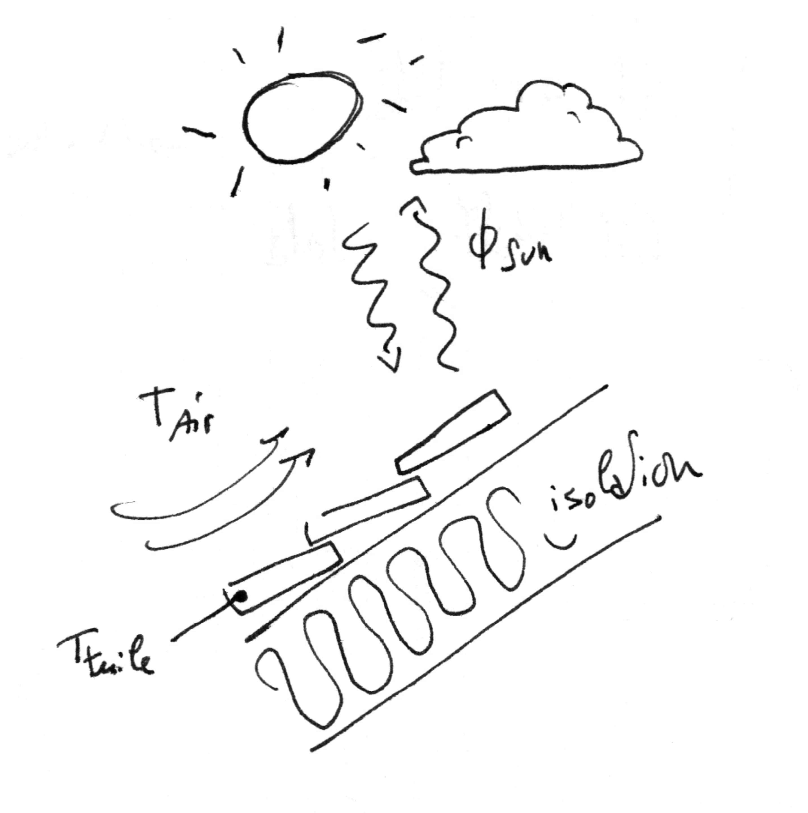
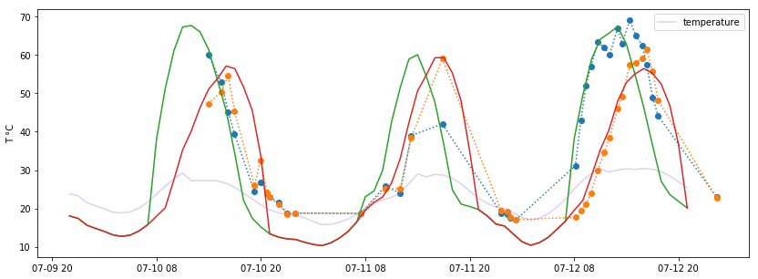
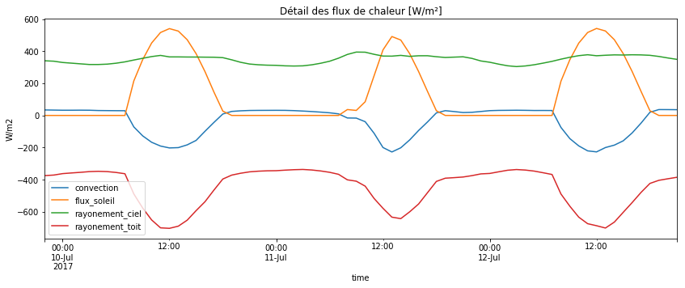

Modèlisation de la température des tuiles d'un toit
[voir le notebook complet sur github]
Mon appartement est sous les toits. Je ressens donc l'effet direct du soleil sur la température chez moi. Je peux aussi facilement mesurer la température des tuiles avec un thermomètre IR, en passant le bras à travers le velux. J'ai donc voulu savoir s'il est possible de prédire correctement la température des tuiles à partir des données météo et de l'irradiation solaire. C'est aussi une partie d'un projet de modéliser la température intérieure de mon appartement.
Le premier problème est d'obtenir les données météo heure par heure, ainsi que la valeur de l'irradiation solaire.
Ensuite, la question est de correctement décrire les échanges thermiques entre les tuiles et le reste de l'univers ... les tuiles sont chauffées par le soleil, et refroidit par l'air ambiant (vitesse du vent) et par rayonement avec le ciel (corps gris/noir) :

En revanche, sont considérés comme négligeable :
- Le flux de chaleur à travers l'isolation du toit (~ 0.17 W/m2/K ).
- L'inertie thermique des tuiles.
- La pluie, et l'humidité de l'air.
Les explications, détails du programme et calculs sont dans le notebook ici. Tout cela en utilisant les librairies pandas, numpy et scipy.
J'obtiens les courbes suivantes, pour les deux pans de toit (orienté sud-est, et nord-ouest):

Les points sont les mesures. Les courbes verte et rouge sont les prédictions pour les deux orientations du toit, et la courbe fine violette est la température de l'air extérieure donnée par la météo.
On peut voir aussi la contribution de chaque source de chaleur ou dissipation :

Le ciel le 12/07 était plutôt clair, et le modèle semble bien prédire la température mesurée. En revanche, lorsque que le temps est plus incertain, il y a plus de différence avec la mesure et le modèle. Le 10 et 11 étaient orageux.
Aussi, la température prédite la nuit est inférieure d'environ 5°C par rapport à la température mesurée... je n'ai pas encore fait de mesure à 3h du matin pour voir si elle descends ou reste au niveau de température ambiante.
la suite : prendre en compte l'inertie thermique, et vérifier dans différentes conditions météo...